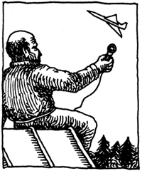

ДАЧНАЯ ЛЕТОПИСЬ

В ходе нашего журналистского расследования обстоятельств, связанных с жизнью и преступлением Романа Степановича Анохина, мы встретились с Тихоном Лукичом Тягни-Рядно. Тихон Лукич был в числе тех, кто тушил знаменитый пожар 1980-го года, во время которого сгорело здание обуховского поселкового совета. На пепелище Тихон Лукич подобрал несколько обгоревших листочков, в одном из которых мы узнали страницу той самой летописи дачного кооператива, которую вел Роман Степанович Анохин. Не сомневаясь в подлинности этого документа и ввиду его чрезвычайной, на наш взгляд, важности, мы решились на публикацию.
7.00. Проснулся. Лежал, думал, когда будет Старый Новый год - с 12-го на 13-ое, то есть сегодня, или с 13-го на 14-ое, то есть завтра.
7.15. Встал, затопил печь.
7.30. Сходил к колодцу за водой. Ополоснулся из бочки.
8.00. Позавтракал. Съел три картошки, квашеной капусты немного. Пил чай со сливовым вареньем.
8.30. Покормил собак.
9.00. Совершил утренний обход. Все, как обычно, спокойно.
9.30. Поднялся на чердак. В 9.50, ровно по расписанию, пролетел Як-40. Записал на магнитофон звук полета.
10.00. Рисовал карандашом. Собирался нарисовать автопортрет, но изобразил почему-то священника, высовывающегося из моего дома. Смял рисунок и выбросил в ведро.
10.30. Читал брошюру про заговоры от болезней и книгу "Молот ведьм", ту, что подсунул сосед Лукич.
12.00. Совершил дневной обход. Все спокойно, как обычно.
12.30. Поднялся на чердак. В 12.45, с опозданием в пять минут, пролетел Ил-62. Записал звук полета.
13.00. Пытался опять нарисовать автопортрет, но получился почему-то мужик в шапке-ушанке. Смял и выбросил в ведро.
13.30. Ходил до Лукича, вызнать про Новый год. Дверь закрыта, наверное, уехал в город.
14.00. Чуток поколол дрова.
14.15. Поставил вариться картошку на обед, а сам опять поднялся на чердак. Пока ждал Ту-144, снова взялся за автопортрет. На этот раз вышло.
14.30. Услыхал, как воет Машка и чьи-то крики.
14.32. Спустился вниз, взял ружье.
14.34. Вышел за забор. Увидел четырех девочек и троих пацанят с палками.
Увидел, что сломана новая штакетина у калитки, а у забора напротив отсутствует целый проем. Увидел Машку на снегу и Рыжего.
14.35. Крикнул "Машка, Рыжий!" Не отозвались.
14.36. Один пацан сказал: "Дед, чем тявкать, водки бы лучше накапал. А не то тебе писю подожжем и взлетишь Гагариным в космос безо всякой ракеты, батянь".
14.37. Выстрелил, перезарядил, выстрелил, перезарядил, выстрелил, перезарядил, выстрелил.
14.40. Четвертый прятался за сараем, убег.
14.49. Сложил в сарай Машку, Рыжего, троих мальчиков и четырех девочек.
14.55. Вернулся в хату, позвонил в город и вызвал милицию.
15.00. Поднялся на чердак и успел записать Ту-144.